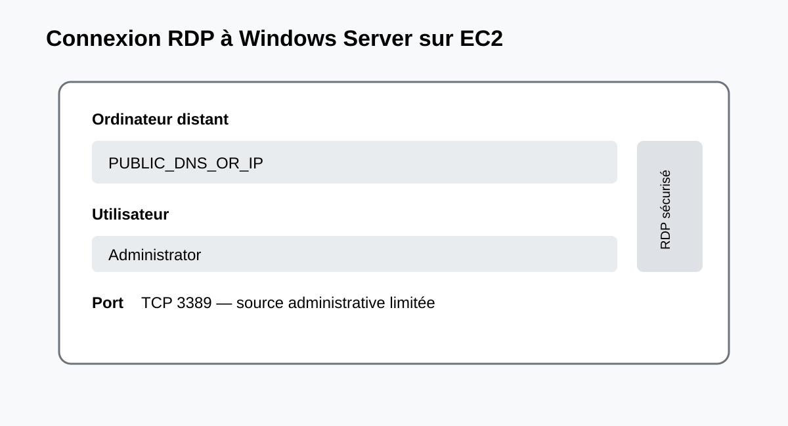

Ce travail pratique présente le déploiement d’un serveur Windows Server dans Amazon EC2, son intégration au réseau AWS et son administration à distance.
Créer une instance EC2 Windows à partir d’une AMI officielle.
Configurer VPC, subnet, Security Group, clé et stockage EBS.
Récupérer le mot de passe Administrator initial.
Établir une connexion RDP sécurisée.
Vérifier le système, le réseau et le service Remote Desktop.
Appliquer les principes de moindre privilège, de réduction de surface d’attaque et de maîtrise des coûts.
Résultat attendu : une instance Windows Server fonctionnelle, accessible uniquement depuis une source d’administration autorisée.
2. Prérequis
Compte AWS actif et région sélectionnée.
Permissions IAM adaptées.
Paire de clés EC2 RSA conservée de manière sécurisée.
VPC et subnet adaptés.
Client RDP disponible, par exemple mstsc.exe.
Flux
Protocole
Port
Source recommandée
RDP
TCP
3389
IP administrative/32
À éviter : autoriser RDP depuis 0.0.0.0/0.
3. Concepts et architecture
Poste administrateur
│ TCP 3389 / RDP
▼
VPC → Subnet → Security Group → EC2 Windows → EBS
│
└→ Systems Manager
Composant
Fonction
AMI
Modèle utilisé pour créer l’instance Windows.
EC2
Serveur virtuel Windows Server.
VPC/Subnet
Isolation et adressage réseau.
Security Group
Filtrage des flux.
EBS
Stockage bloc persistant.
RDP
Administration graphique à distance.
4. Installation et configuration

4.1 Créer la paire de clés
EC2 → Key Pairs → Create key pair.
Choisir un nom comme m2-windows-key.
Sélectionner RSA.
Télécharger le fichier privé .pem et ne jamais le publier.
4.2 Security Group
RDP | TCP | 3389 | YOUR_ADMIN_IP/32
Limiter la source à l’adresse IP publique du poste d’administration ou à un réseau privé de confiance.
4.3 Lancer l’instance
Choisir une AMI officielle Microsoft Windows Server.
[ ] Mot de passe Administrator récupéré et modifié
[ ] RDP fonctionnel
[ ] TermService vérifié
[ ] Windows Update effectué
[ ] Tests réseau réalisés
[ ] Ressources inutilisées supprimées
11. Conclusion
Ce travail pratique a permis de mettre en œuvre un serveur Windows dans Amazon EC2 en couvrant les dimensions calcul, réseau, stockage, sécurité et accès distant.
La connexion RDP convient au TP, mais une architecture professionnelle doit réduire l’exposition directe du port 3389 et privilégier des mécanismes d’accès privés ou gérés lorsque cela est possible.